Fun Projects for your LEGO® MINDSTORMS® NXT!
|
|
Fun Projects for your LEGO® MINDSTORMS® NXT! |
| Steering Remote Control |
|

1
 |
OR |
 |
You can use the NXT with either AA batteries or the NXT Rechargeable Battery Pack. |
2
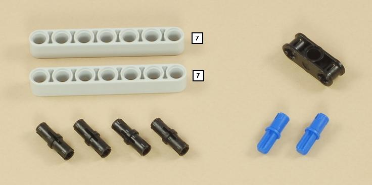
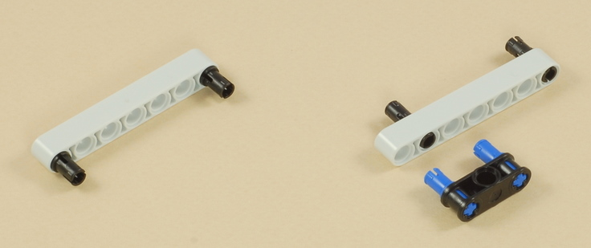
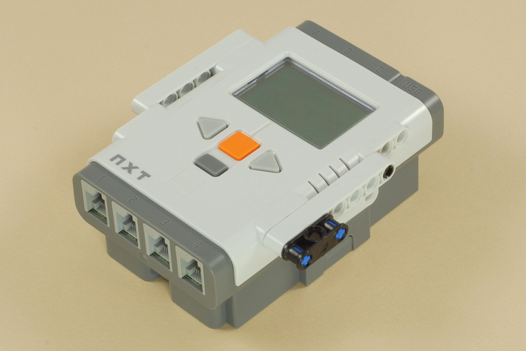
3
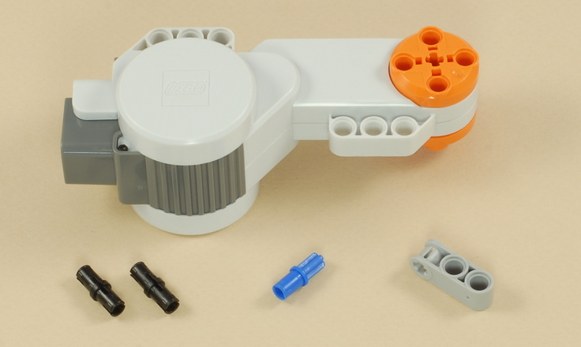
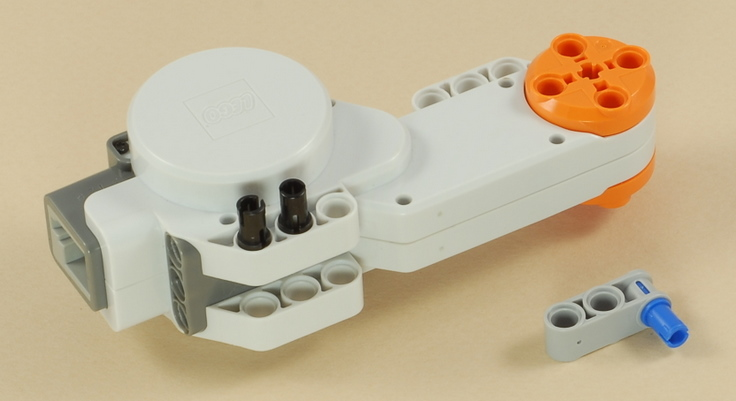
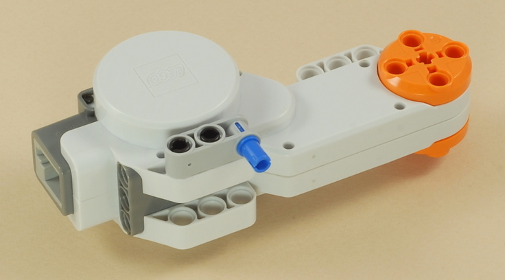
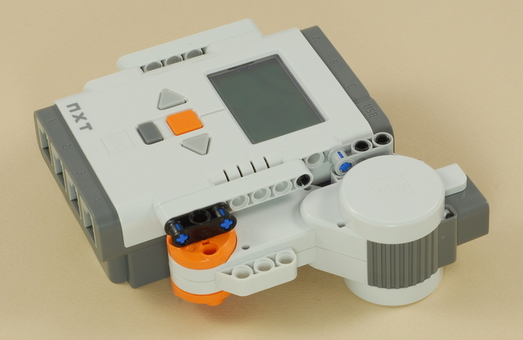
4
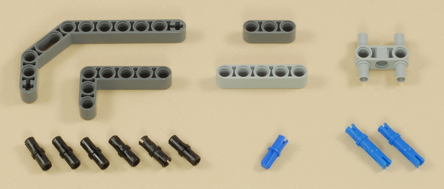
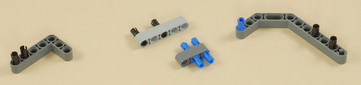
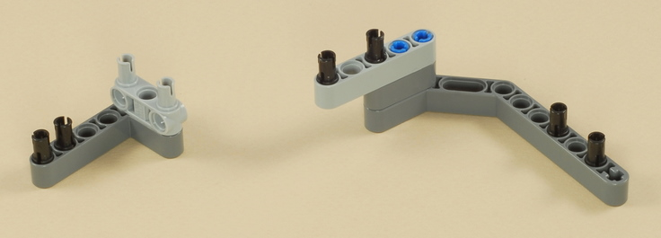
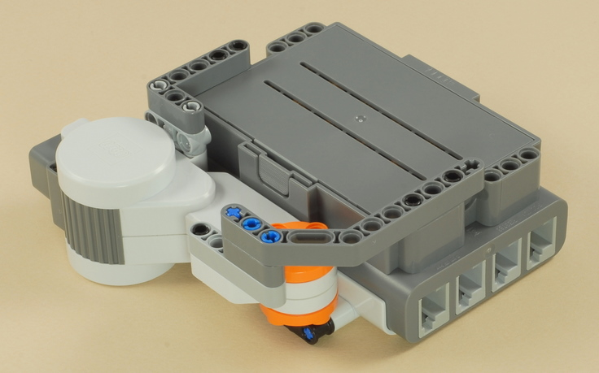
5
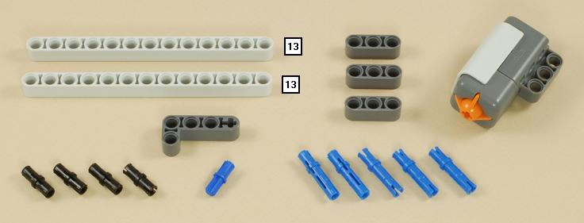
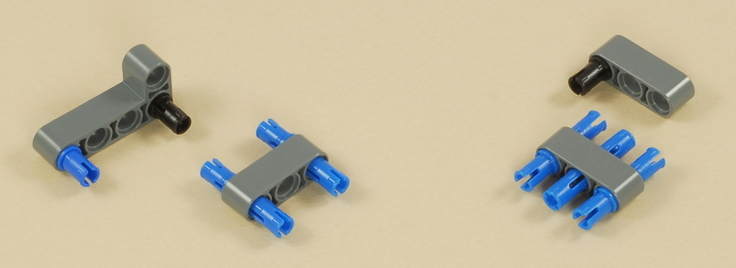
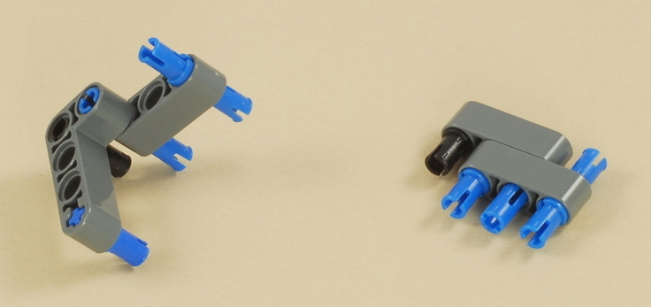
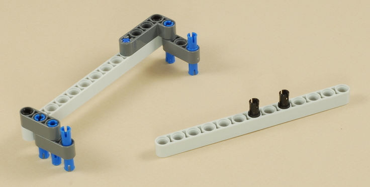

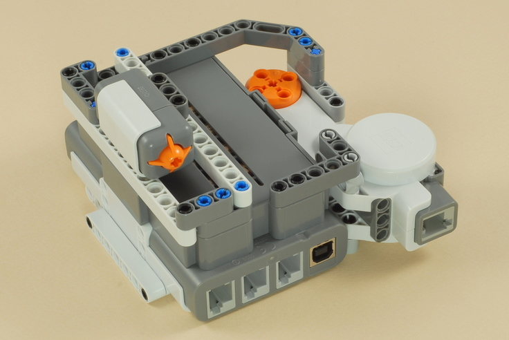
6
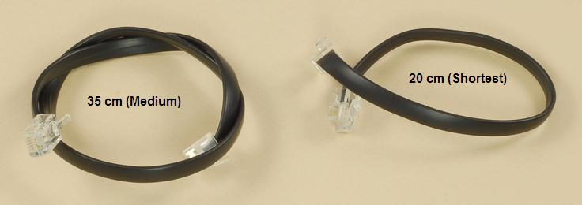
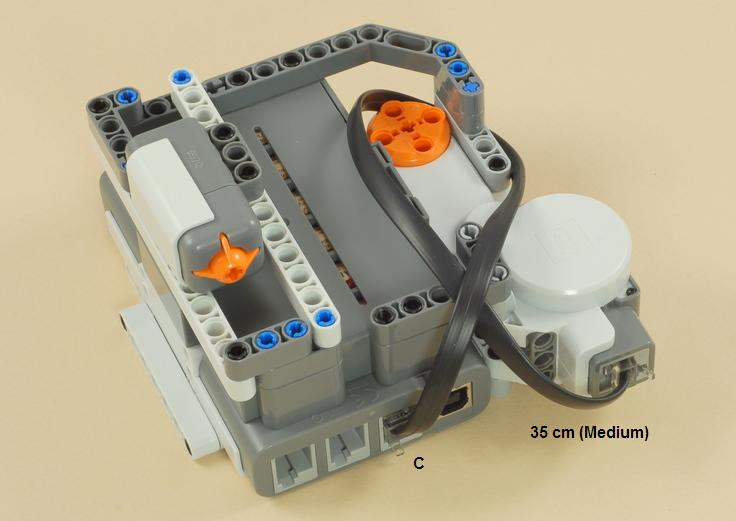
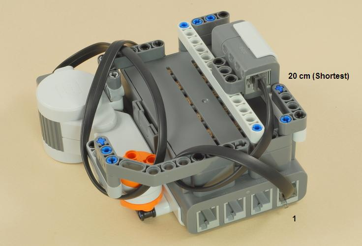
7
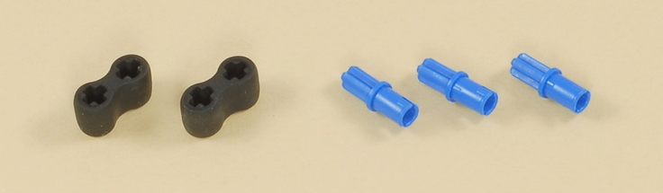
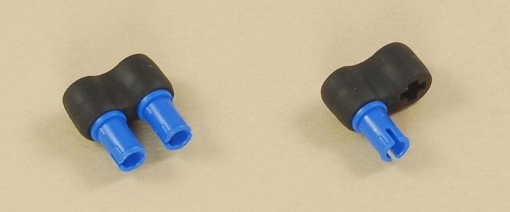
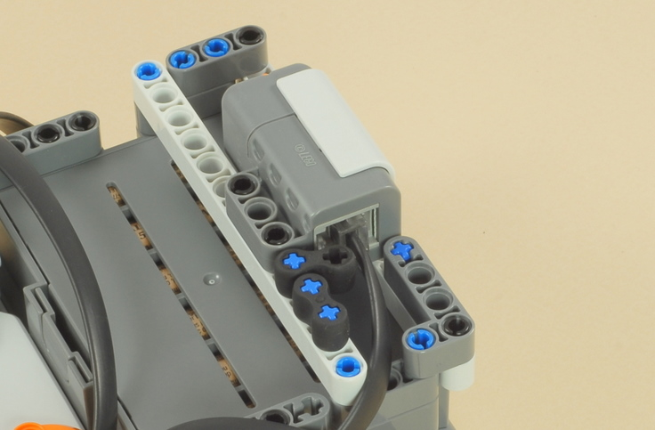
8
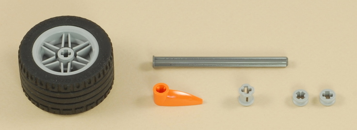
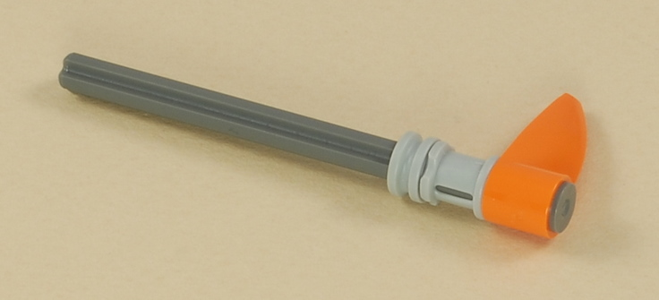
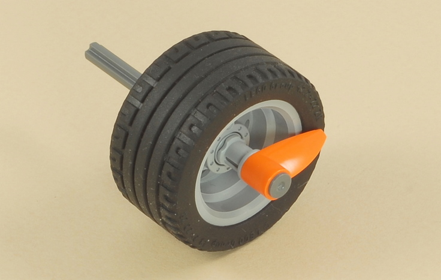
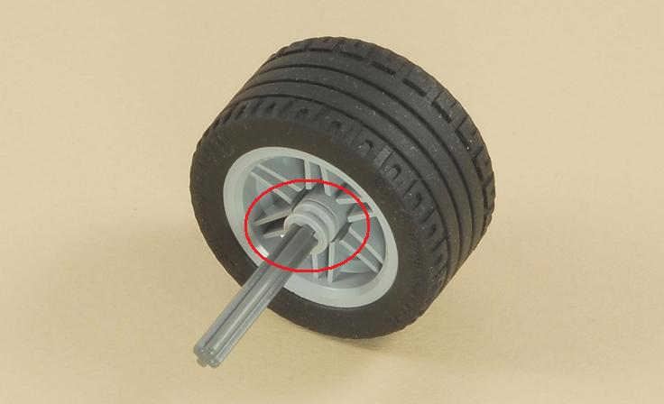
9 (Optional: Alternate Steering Lever)
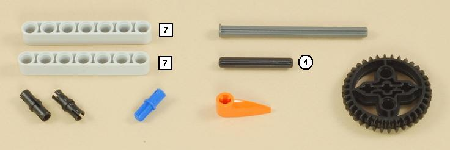
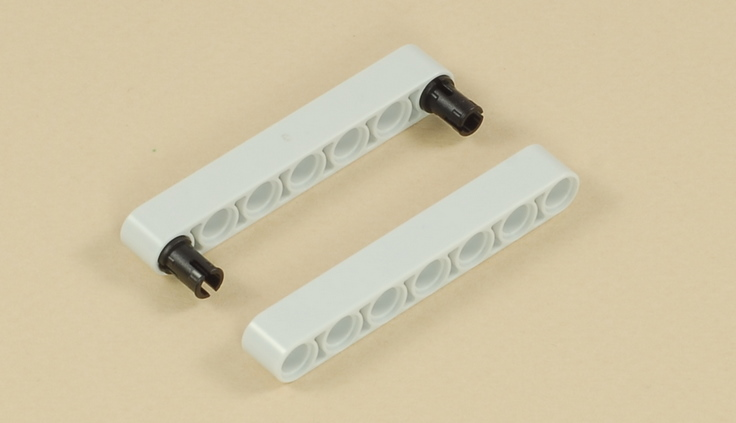
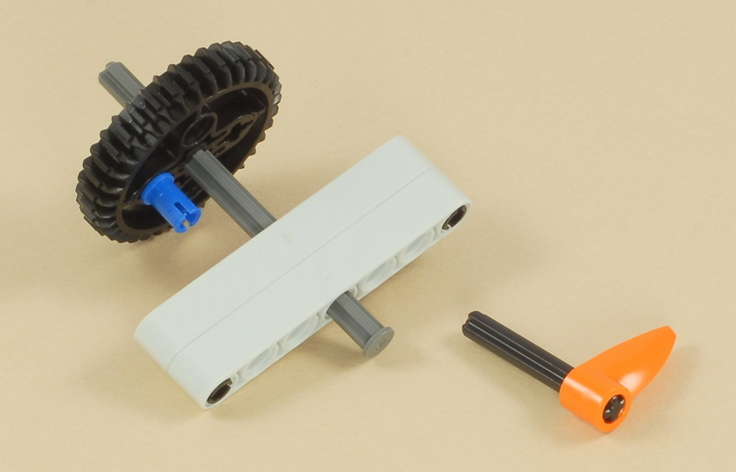
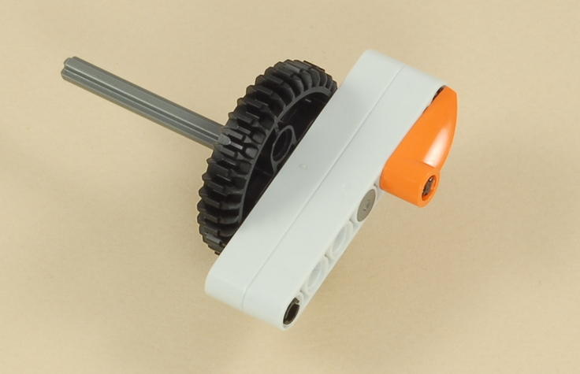
10
 |
OR |
 |
You can use either the steering wheel or the steering lever, or another dial or lever of your own design. |
|
Steering
Remote Control Programming The SteerRemote program for the remote control provides one general purpose way to send Bluetooth messages from the remote control to another NXT (other strategies are possible). A receiving program on the other NXT must be used to interpret the Bluetooth messages and take action. For example, see the SteerBTCar program from the Race Car project. Instructions to use the remote with the Race Car are below. The SteerRemote program sends three different kinds of Bluetooth messages to three different mailboxes on the receiving NXT:
|
|
Using Bluetooth Wireless Remote Control with Two NXTs
|
||||
Challenges
|
|
Copyright
©
2007-2010 by Dave Parker. All rights reserved. |